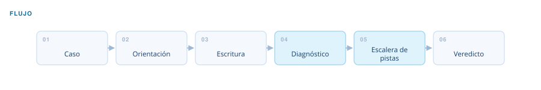
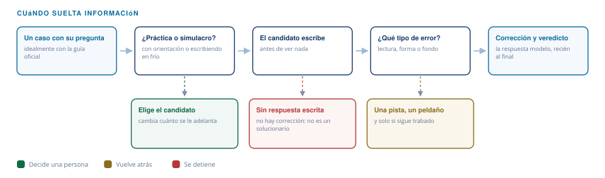

Automatización financiera · CFA Essay Tutor Nivel III
Tutoría de ensayos CFA
Un examinador exigente, no un solucionario.
El problema
En la sección de desarrollo del Nivel III los puntos se pierden por forma más que por desconocimiento: responder al verbo equivocado, enterrar la conclusión, justificar en círculo o escribir fuera de la plantilla que da la pregunta.
Entra
Un caso con su pregunta, idealmente con la respuesta guía oficial.
Sale
Corrección con el tipo de error identificado, lo que faltó y un veredicto franco de si aprobaría.
El flujo
Seis pasos, y el tercero no lo hace el sistema: lo hace el candidato. Todo lo que viene después —diagnóstico, pistas, veredicto— depende de que haya algo escrito que corregir.

Qué decide y cómo
Casi todas las decisiones del flujo son sobre lo mismo: cuánta información soltar, y cuándo.

Modo
Práctica guiada, con orientación antes de escribir; o simulacro, escribiendo en frío.
Tipo de error
Se clasifica en lectura, forma o fondo antes de corregir, porque el remedio de cada uno es distinto.
Pistas
Se sube un peldaño a la vez y solo si el candidato sigue trabado.
Control de calidad
No entrega la respuesta ni inventa un puntaje numérico. Cuando reconstruye la respuesta de referencia sin tener la oficial, lo declara y muestra su desarrollo al cierre.
Arquitectura
- Taxonomía de verbos de examen
- Patrones de forma de la respuesta
- 10 arquetipos de pregunta
- Criterios de puntuación
Qué construí
Definí el método de corrección, la clasificación de errores y la escalera de pistas.
¿Un flujo así para tu proceso?
Este nació de un cuello de botella real. Si tienes un proceso financiero que se repite cada mes, probablemente se pueda sistematizar igual.